Wayfare is a group expense tracker built for trips and tours. When a group travels together,
payments naturally scatter — one person pays for dinner, another for the taxi, a third for
hotel check-in. Wayfare keeps track of all of it and, at the end, tells everyone exactly
who owes whom with the fewest possible transactions.
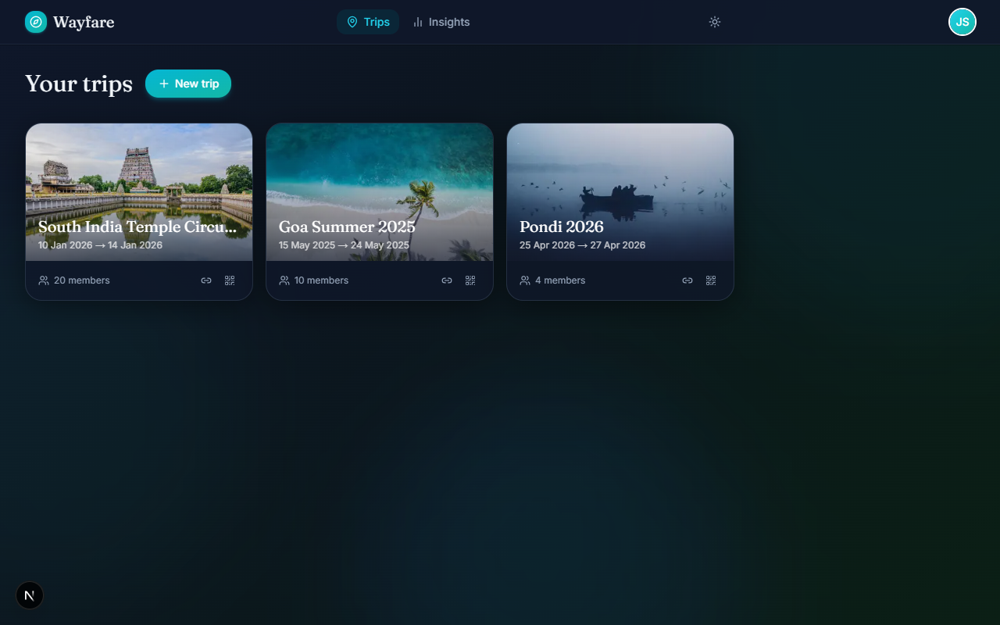
The Wayfare trips dashboard — all your trips at a glance.
Key Concepts
Understanding these four building blocks will make everything else click.
✈️
Trip
A named group journey with optional dates, budget, cover photo, and itinerary. Everything
— expenses, members, settlements — lives inside a trip.
👥
Member
Anyone who participates in the trip's costs. Members can be real Wayfare users (Google
account) or guests — people added by name without an account.
🧾
Expense
A single payment — e.g. "Dinner at Gajalee, ₹3,200, paid by Raj, split equally among 5."
Expenses can be split four different ways.
💸
Settlement
A real-world payment between two members that clears part of a debt. Wayfare computes
the minimum number of settlements needed to balance the group.
How Wayfare calculates who owes whom
After every expense is logged, Wayfare computes each member's net balance:
how much they paid out minus how much they owe for their share of all expenses. Members
with a positive balance are owed money; members with a negative balance owe money.
A greedy algorithm then pairs the largest creditor with the largest debtor, transferring
the smaller of the two amounts, until all balances reach zero. This guarantees the fewest
possible payments — at most n − 1 transactions for a group of
n people.
ℹ️
Example: Five people on a trip. Wayfare might settle everything with
just four payments instead of each person paying every other person individually
(which could be up to ten payments).
What Wayfare is not
Wayfare is designed specifically for group trips. It is not a general household
bill splitter, a recurring subscription tracker, or a personal budgeting app. Every
feature is built around the shared-journey use case.
2
Getting Started
Wayfare uses Google sign-in — no username or password to remember. All you need is a
Google account.
Signing in
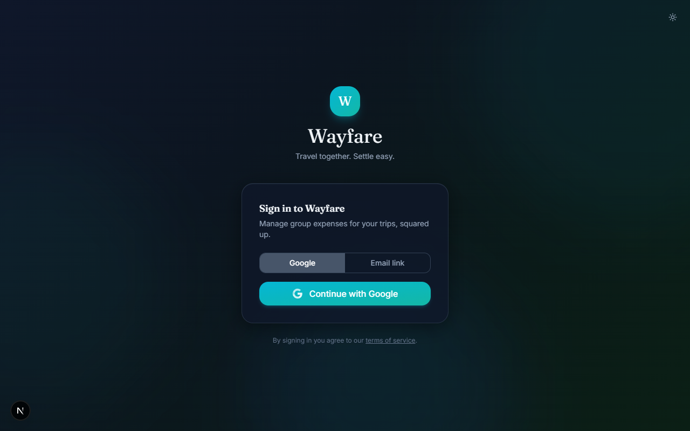
The Wayfare login page.
Open wayfare-sigma.vercel.app in your browser.
Click Continue with Google.
Choose your Google account and grant permission.
You are redirected to your trips dashboard. Done.
✅
Your display name and profile picture are pulled from Google automatically. You don't
need to set up a profile.
Joining a trip via invite link
If someone already created a trip and shared an invite link or QR code with you, you can
join without creating a trip yourself.
Open the invite link (it looks like wayfare-sigma.vercel.app/join/…).
If you are not signed in, you will be prompted to sign in with Google first.
Click Join Trip on the confirmation page.
You are added as a member and taken to the trip dashboard.
ℹ️
QR codes: Trip admins can display a QR code that opens the same join
link. Scan it with your phone camera to join instantly.
Navigation
Once signed in, two sections are always accessible:
🗺️
Trips
Your home base. Lists all active trips you belong to, plus archived trips below.
This is where you create new trips and pick up where you left off.
📊
Insights
A portfolio view across all your trips — total spend, favourite categories, most
travelled companions, and a trip-by-trip comparison chart.
On desktop, these appear in the top navigation bar. On mobile,
they appear in the bottom navigation bar so your thumb can always reach them.
Signing out
Click your avatar or initials in the top-right corner, then select Sign out
from the dropdown menu.
3
Creating & Managing Trips
A trip is the container for everything — members, expenses, and settlements.
You must create (or join) a trip before you can log any expenses.
Creating a new trip
From the Trips page, click New Trip.
Enter a Trip name (required). Make it recognisable — e.g. "Goa June 2026".
Add an optional Description to give context to other members.
Set Start date and End date if known. Wayfare uses these to default new expenses to the right date.
Choose a Currency — this is the display currency for the trip. INR is the default.
Optionally set a Budget. A progress bar on the dashboard will track spend against it.
Optionally add an Itinerary / Plan — a free-text description of what you plan to do. Wayfare's AI uses this on the Insights page to compare your plan against actual expenses.
Click Pick cover photo to search Unsplash for a photo that represents your destination.
Click Create Trip.
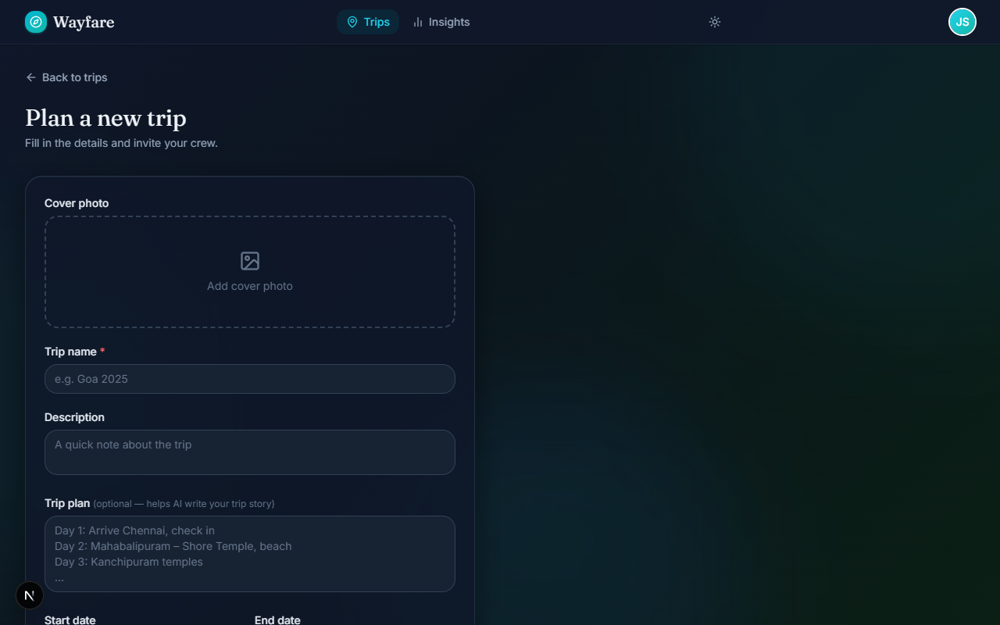
The new trip form.
✅
Cover photo tip: Search for your destination name (e.g. "Rajasthan", "Bali",
"Swiss Alps") to find high-quality travel photography from Unsplash. The photo appears on
the trip card and the shareable summary page.
The trip dashboard
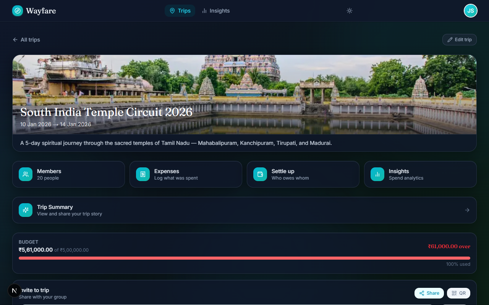
The trip dashboard — your command centre for a single trip.
Each trip has five sub-pages accessible from the tabs at the top:
🏠
Dashboard
Overview: member balances, recent expenses, budget bar, quick-add expense bar.
🧾
Expenses
Full list of all expenses with search, filters, and sort controls.
👥
Members
Everyone in the trip — invite new people, add guests, manage roles.
💸
Settle Up
Suggested payments to balance the group, mark paid, settlement history.
📊
Insights
Charts, group roles, smart observations, and plan vs reality comparison.
Editing a trip
Trip admins can edit any trip detail after creation. Open the trip, then click the
Edit button (pencil icon) near the trip name. All fields from the creation
form are editable, including the cover photo, budget, and itinerary.
ℹ️
Who is an admin? The person who created the trip is an admin by default.
Admins can edit trip details, remove members, and archive the trip. Regular members can
only add and manage expenses.
Archiving a trip
Once a trip is fully settled and done, you can archive it to keep your Trips page tidy.
Archived trips move to a collapsed "Archived" section at the bottom of the page — they
are never deleted and remain fully accessible.
Open the trip and click Edit.
Scroll to the bottom of the edit form and click Archive Trip.
Confirm the action. The trip disappears from your active list.
To restore an archived trip, expand the Archived section on the Trips page, open the trip,
go to Edit, and click Restore Trip.
⚠️
Only admins can archive or restore a trip. If you don't see the Archive
button, you are a regular member of that trip.
Sharing a trip
Every trip has a public summary page — a read-only snapshot of the trip
(cover photo, dates, members, total spend) that anyone can view without signing in.
This is useful for sharing a trip recap with people who weren't on the trip.
On the trip card on the Trips page, click the Share button. On mobile,
this opens the native share sheet; on desktop, it copies the link to your clipboard.
You can also scan or copy the invite QR code from the Members page.
4
Members
Every expense in Wayfare is tied to a member — someone who paid and someone who owes.
Getting your members set up correctly before logging expenses saves a lot of editing later.
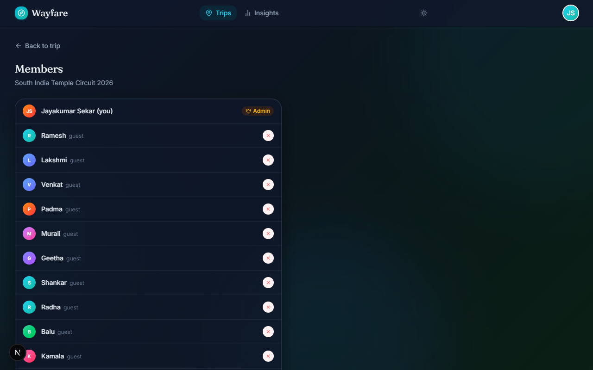
The Members page — everyone in the trip, their role, and invite tools.
Types of members
👤
Real users
People who signed into Wayfare with Google. Their name and avatar are pulled from
Google automatically. They can log in and manage expenses themselves.
🪄
Guest members
People added by name only — no Google account needed. Useful for family members,
children, or anyone who won't be using the app directly. An admin logs their
expenses on their behalf.
Member roles
🛡️
Admin
Can edit trip details, add and remove members, regenerate the invite link, and
archive the trip. The person who creates the trip is always an admin.
👥
Member
Can add, edit, and delete expenses. Cannot change trip settings or remove other
members. This is the default role when joining via an invite link.
Inviting people via link
Open the trip and go to the Members tab.
Click Copy invite link or Show QR code.
Share the link (WhatsApp, SMS, email — anywhere) or let people scan the QR code.
When they open the link and click Join Trip, they are added automatically.
✅
QR code: Great for in-person situations — display it on your phone and
everyone scans it before the trip starts. No link sharing needed.
⚠️
The invite link is public. Anyone with the link can join. If the link
is accidentally shared too widely, admins can regenerate it — the old
link stops working immediately.
Adding a guest member
Use this for people who won't have a Wayfare account — children, elderly relatives, or
anyone you're logging expenses on behalf of.
Go to the Members tab.
Click Add guest.
Enter the guest's name (e.g. "Grandma", "Arjun (kid)").
Click Add Guest. They appear in the member list immediately.
Guests appear in all expense split selectors and the settle-up screen just like real members.
Their balances are tracked identically.
Removing a member
Only admins can remove members. On the Members tab, click the Remove button
next to a member's name.
⚠️
Removing a member does not delete their expenses. Any expenses they paid
or were split with remain in the trip. Only remove a member if they genuinely should not
be part of the trip at all.
Regenerating the invite link
If the invite link was shared with the wrong people, admins can generate a new one.
On the Members tab, click Regenerate link. The previous link immediately
becomes invalid — anyone who clicks it will see an error page.
5
Logging Expenses
Expenses are the heart of Wayfare. This section covers every way to add them — from the
full form to the AI quick-add bar to bulk chat import.
The add expense form
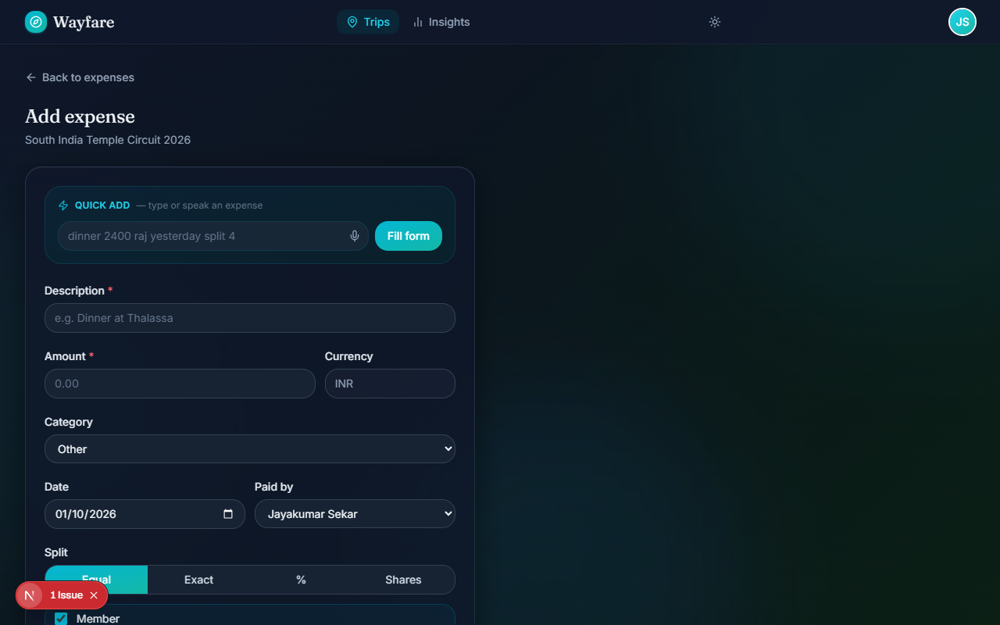
The full add expense form — every field explained below.
To open it: go to a trip's Expenses tab and click Add Expense,
or use the quick-add bar on the dashboard (see below).
📝
Description
What the expense was for. Keep it short and recognisable — "Hotel checkout", "Lunch at Anand".
💰
Amount
The total amount paid. Enter numbers only — no currency symbol needed. A numeric keypad appears on mobile.
👤
Paid by
Which member actually paid. Defaults to you. Change this when you're logging an expense on someone else's behalf.
📅
Date
When the expense occurred. Defaults to today (or the trip's start date if the trip hasn't begun yet).
🏷️
Category
One of eight categories: Food, Accommodation, Transport, Sightseeing, Shopping, Activities, Groceries, Other.
📋
Notes
Optional free-text note — useful for bill numbers, restaurant names, or anything that doesn't fit the description.
Split modes
Wayfare supports four ways to divide an expense. Choose the one that matches how you
actually want to share the cost.
⚖️
Equal
The total is divided equally among all selected members. Tick or untick members to
include or exclude them. The most common mode.
🔢
Exact
You type the exact rupee amount each member owes. The sum of all amounts must equal
the total — Wayfare will alert you if it doesn't.
%
Percentage
Each member is assigned a percentage. All percentages must add up to 100%. Wayfare
computes each person's share automatically.
🎲
Shares
Assign a number of "shares" to each member. Someone with 2 shares pays twice as much
as someone with 1. Good for room splits where adults and children pay differently.
✅
Example — shares mode: Hotel room ₹6,000. Two adults (2 shares each)
and two children (1 share each) → 6 total shares → each adult pays ₹2,000, each child
pays ₹1,000.
Browsing and filtering expenses
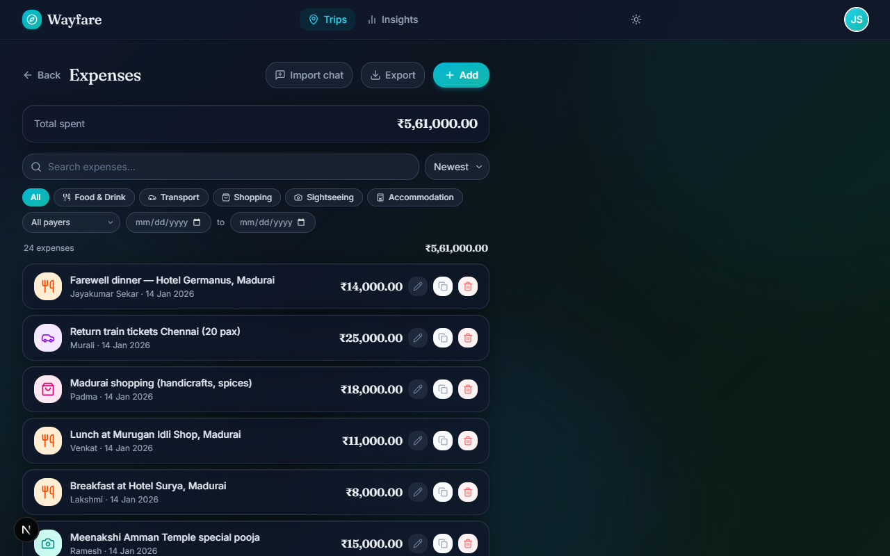
The Expenses list — search, filter, and sort to find any expense instantly.
The Expenses tab has a full set of filters above the list:
Search — type any word from the description to filter instantly.
Category pills — click a category icon to show only that category.
Paid by — filter to one member's expenses.
Date range — show expenses between two dates.
Sort — sort by date (newest/oldest) or amount (high/low).
A running filtered total at the top of the list updates as you apply
filters — useful for checking "how much did we spend on food this trip?"
Editing an expense
Click any expense card to open it, then click Edit. All fields are
editable. Changes take effect immediately for all members.
Duplicating an expense
On an expense card, click the Duplicate button (two overlapping squares).
A copy of the expense is created with today's date — useful for recurring costs like
daily breakfast or parking.
Deleting an expense
Click the Delete button (bin icon) on any expense card. You'll be asked
to confirm. Deletion is instant in the UI and reverses if the server reports an error.
Quick-add bar ✨ AI
The quick-add bar sits at the top of the trip dashboard. Type a plain-English description
of an expense and it pre-fills the form for you — no tapping through dropdowns.
💡
Example inputs: dinner 2400 raj yesterday split 4 hotel 12000 paid by priya equal all cab airport 850 me 30% raj 70%
The parser understands:
Amounts — plain numbers, "2.4k", "₹1200"
Member names — partial names matched to your trip members
Relative dates — "yesterday", "Monday", "3 days ago"
Categories — "dinner", "hotel", "cab", "groceries" are detected automatically
A badge shows whether AI mode (✨ AI) or rule-based fallback
(⚡ Basic) was used. Both pre-fill the same form — AI mode
handles more complex phrasing.
Voice input 🎤 Speak
Next to the quick-add bar is a microphone button. Tap it, speak your expense naturally,
and the transcript is passed to the AI parser automatically.
Tap the microphone icon in the quick-add bar.
Allow microphone access if prompted by the browser.
Speak the expense — e.g. "Lunch at Saravana Bhavan, eight hundred rupees, paid by me, split four ways."
The transcript appears in the bar and the form is pre-filled.
ℹ️
Voice input uses the Web Speech API and is optimised for Indian English (en-IN).
It is hidden on browsers that don't support speech recognition (mainly Firefox and some
older mobile browsers).
Chat import — bulk expense extraction
If your group discussed expenses in a WhatsApp or Telegram chat, you can paste the
entire chat snippet and Wayfare will extract all the expenses at once.
On the Expenses tab, click Import from chat.
Paste the chat text into the dialog box.
Click Extract expenses. The AI reads the conversation and identifies all payments mentioned.
Review the extracted list — you can edit any row inline before adding.
Click Add all to bulk-add every expense at once.
✅
Best results: Include a few lines of context around each payment mention.
The AI uses member names from the chat to match them to your trip members — make sure
names in the chat roughly match the names in Wayfare.
CSV export
To download all expenses as a spreadsheet, open the trip and click Export CSV
(in the Expenses tab header or the trip menu). The file downloads immediately and includes
every expense with description, amount, category, date, payer, and each member's share.
6
Settling Up
Once all expenses are logged, Wayfare tells everyone who owes whom and how much —
with the fewest possible transfers. This is the settle-up flow.
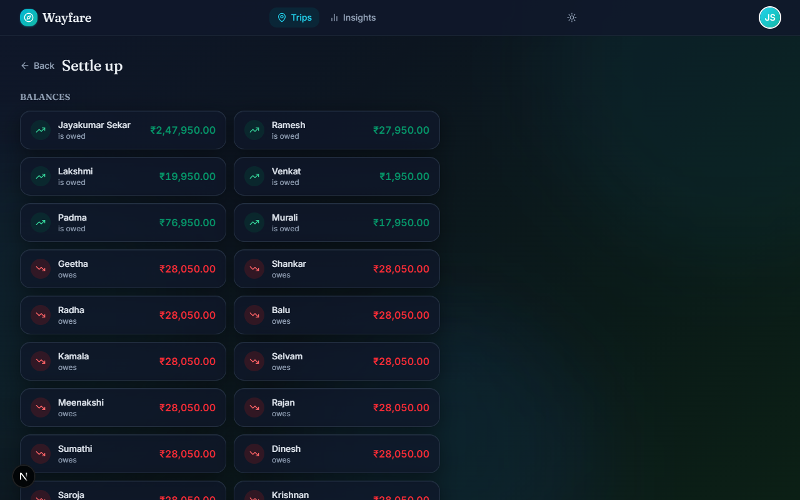
The Settle Up page — suggested payments, one-tap UPI links, and settlement history.
Reading your balance
At the top of the Settle Up page, each member's net balance is shown:
🟢
Positive balance
You are owed money. You paid more than your share across the trip. Others need to
pay you.
🔴
Negative balance
You owe money. Your share of expenses exceeded what you paid. You need to pay someone.
ℹ️
How is this calculated? Net balance = total paid − total owed + payments
sent − payments received. The "How is this calculated?" link at the bottom of the page
shows a step-by-step breakdown for your specific numbers.
Suggested payments
Below the balances, Wayfare lists the specific transfers needed to settle the group.
These are computed to use the minimum number of transactions possible.
Each row shows: who pays → who receives → how much.
Marking a payment as paid
When a real-world payment has been made — cash, bank transfer, or UPI — record it in
Wayfare so the balances update.
Find the relevant payment row on the Settle Up page.
Click Mark as paid.
Confirm the amount (you can adjust it for partial payments).
The settlement is recorded and balances recalculate immediately.
✅
Partial settlements: If someone pays part of what they owe, enter the
actual amount transferred — not the full suggested amount. The remaining balance stays
in the settle-up list.
UPI payment 🇮🇳 UPI
If you owe someone money, a Pay via UPI button appears on your row.
Tap it, enter the recipient's UPI ID (once — it's saved for the session), and Wayfare
opens PhonePe, Google Pay, or Paytm pre-filled with the exact amount and a payment note.
On your payment row, click Pay via UPI.
Enter the recipient's UPI ID (e.g. raj@okicici).
Your default UPI app opens with the amount pre-filled.
Complete the payment in the UPI app.
Return to Wayfare and click Mark as paid to record it.
WhatsApp debt reminder 💬 WhatsApp
If someone owes you money, a Remind on WhatsApp link appears on your
row (when you are the recipient). Tapping it opens WhatsApp with a pre-written message
containing the amount and trip name — ready to send.
Settlement history
All recorded settlements are listed below the suggested payments. Each entry shows the
payer, recipient, amount, and date. You can delete a settlement if it was recorded in
error — balances will revert accordingly.
Member debt breakdown
The Per-member view toggle (below the suggested payments) switches to a
detailed breakdown showing exactly who owes what to whom at the individual level —
useful for understanding the full picture beyond the optimised summary.
How the calculation works — in plain English
Wayfare's settlement algorithm works in two steps:
Compute net balances. For every member: add up what they paid, subtract
what they owe for their share of each expense, add any settlements they sent, subtract
any settlements they received.
Greedily match creditors and debtors. The person who is owed the most
is matched with the person who owes the most. They exchange the smaller of the two
amounts. This repeats until all balances reach zero.
ℹ️
For a group of n people, this always produces at most n − 1
transactions — far fewer than the n × (n−1) / 2 possible pairings if everyone
paid everyone else directly.
7
Insights
Wayfare goes beyond tracking — it analyses your spending and helps you understand
patterns, habits, and group dynamics across every trip.
Per-trip insights
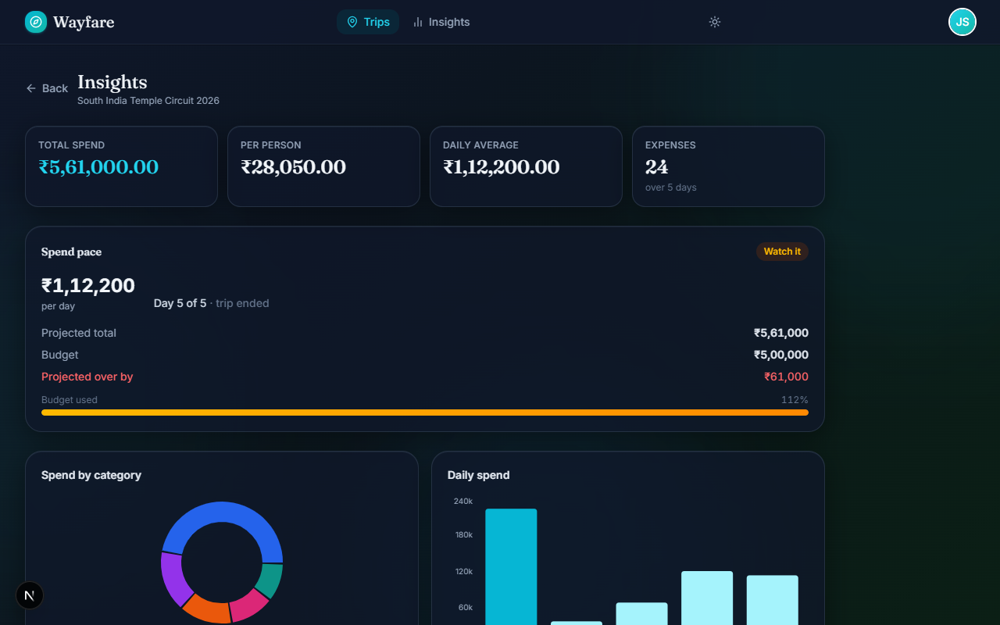
The per-trip Insights page — KPIs, charts, group roles, and smart observations.
Open any trip and go to the Insights tab. You'll find:
📊
KPI cards
Total spend, number of expenses, average per day, and per-person cost — each with
an animated count-up so the numbers feel alive.
🍩
Category donut
How your spending breaks down by category. Hover a segment to see the exact amount
and percentage for that category.
📅
Daily spend bar
Spend per day of the trip. Quickly spot your splurge days and quiet days.
👥
Member contributions
A bar chart of how much each member paid out of pocket versus their share. Shows
at a glance who bankrolled the trip.
Smart insight cards
Below the charts, Wayfare generates up to seven plain-English observations about your
trip — things like:
"Food was your biggest category — 42% of total spend"
"Priya covered 60% of accommodation costs"
"Day 3 was your most expensive day (₹18,400)"
"You're on track to finish 12% under budget"
Group roles
Each member is assigned a role based on their spending and payment behaviour:
🏦
Trip Banker
Paid the most out of pocket. The group's primary bankroller.
🧾
Tab Master
Logged the most individual expenses. The group's unofficial accountant.
💎
High Roller
Highest average spend per expense. Goes big when they pay.
⚖️
Fair Splitter
Paid almost exactly their fair share. The most balanced member.
🎯
The Balancer
Settled up first and fastest. Keeps the group's books clean.
✈️
Traveler
A well-rounded participant — contributes evenly across all categories.
Payment fairness score
Each member also gets a fairness score bar — green means they paid close to their
fair share, amber means slightly off, red means significantly over or under. This is
purely informational, not a judgement.
Plan vs Reality ✨ AI
If you added an itinerary when creating the trip, Wayfare compares
your plan against what you actually spent on. Claude AI analyses both and shows:
Coverage % — how much of your plan made it into expenses
Covered activities — planned things you actually did
Missed activities — things in the plan with no matching expense
Surprise spending — expenses that weren't in the plan at all
ℹ️
Plan vs Reality only appears when the trip has an itinerary and at least a few expenses.
It requires an Anthropic API key on the server — if not configured, the card is hidden.
All-trips portfolio
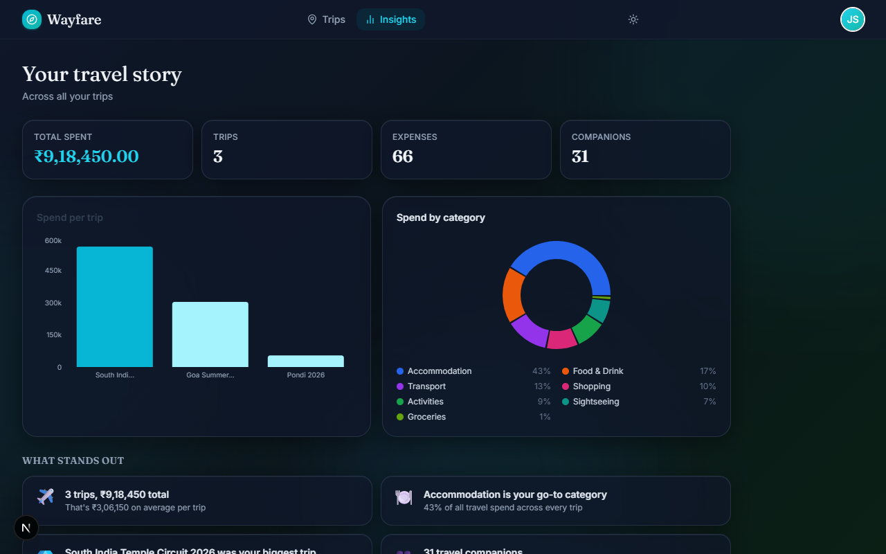
The all-trips portfolio — patterns and comparisons across every trip you've been on.
The top-level Insights page (from the main navigation) gives you a
bird's-eye view across all trips:
Total spend across all trips — your lifetime travel expenditure in Wayfare
Unique travel companions — everyone you've ever split with
Favourite category — what you spend most on across all trips
Trip comparison bar — all trips side by side by total spend
Spend trajectory — are your trips getting cheaper or more expensive?
Budget forecast — predicted final spend based on daily rate, for active trips
8
Trip Summary
Every trip has a public summary page that anyone can view — no account needed.
Share it with friends who weren't on the trip, post it in a group chat, or keep it
as a personal record.
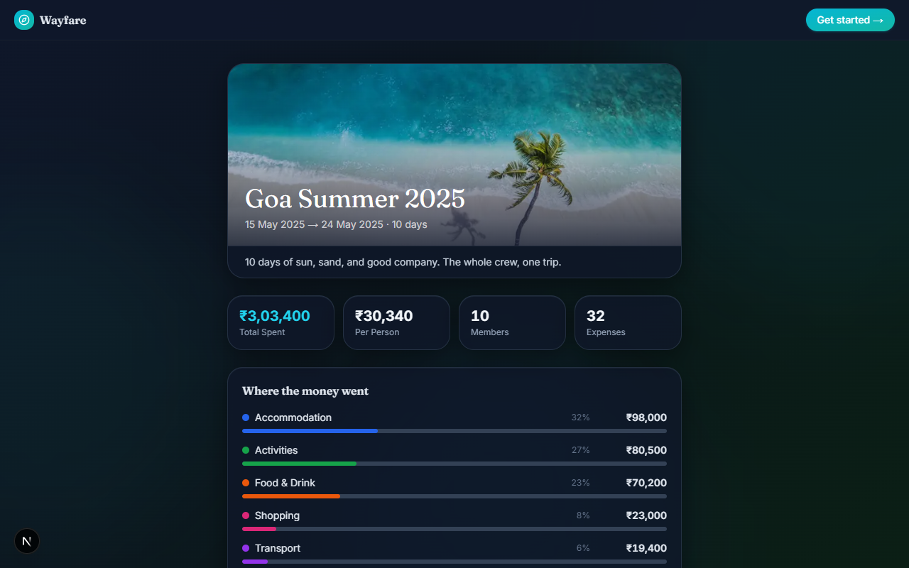
The public trip summary — cover photo, members, spend breakdown, and AI narrative.
What the summary page shows
🖼️
Cover & header
Trip name, cover photo, dates, and total member count.
💰
Spend summary
Total spend, top category, and a category breakdown.
👥
Member list
Everyone who was on the trip, shown with their avatar initials.
📖
AI trip story
A narrative generated by Claude — a travel story written from your expenses.
Sharing the summary
Open the trip from your Trips list.
Click the Share button on the trip card or detail page.
On mobile, the native share sheet opens. On desktop, the link is copied to your clipboard.
Paste and send — anyone with the link can view the summary without signing in.
ℹ️
The summary page never shows individual balances or who owes whom — only the
aggregate spend. Private financial details stay within the app.
AI trip narrative ✨ AI
The trip story is generated on-demand by Claude AI. It reads your day-by-day expense
timeline and optional itinerary to write a short travel narrative in the style of a
trip recap.
On the summary page, scroll to the Trip Story section.
Click Generate story.
Wait a few seconds — Claude writes a personalised narrative based on your actual expenses.
The story is cached; refresh the page and it reappears without regenerating.
✅
Better stories: Add an itinerary when creating the trip. Claude uses it
as a backbone for the narrative — without it, the story is based on expense descriptions
alone and may feel thinner.
Open Graph image
When the summary link is shared on WhatsApp, iMessage, Twitter, or any platform that
shows link previews, Wayfare generates a rich 1200×630 preview image showing the trip
name, dates, member count, and total spend — automatically.
9
Theme / Appearance
Wayfare supports both light and dark themes — every screen, chart, and form adapts
fully to your preferred appearance. By default, the app matches your operating
system's setting.
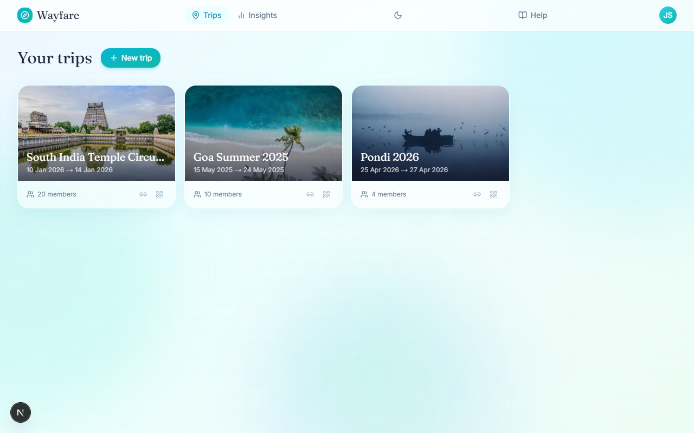
Wayfare in light mode — a bright glassmorphic design with a cyan/teal palette.
Toggling the theme
🖥️
Desktop
The Sun / Moon toggle is in the top navigation bar, between the nav links and your
avatar. Click it to switch between light and dark themes instantly.
📱
Mobile & login
The toggle also appears in the top-right corner of the login page and landing page
so you can set your preference before signing in.
Light mode
Light mode (shown above) uses a bright background with a cyan and teal colour palette,
frosted-glass cards, and high-contrast text — well suited for use in daylight or
well-lit environments.
Dark mode
Dark mode switches to a deep slate palette that reduces eye strain in low-light
conditions. Every chart, form, and dialog adapts automatically — no elements are
left with a bright white background.
How your preference is saved
Your theme choice is stored in your browser's local storage. It survives page refreshes,
closing the tab, and reopening the app. If you have never set a preference, Wayfare
automatically follows your operating system's light or dark setting.
ℹ️
Theme preference is per-device and per-browser. Switching to dark mode on your phone
does not affect your desktop browser — toggle it separately on each device.
10
Platform Admin
The admin dashboard is a restricted area visible only to designated platform
administrators. Regular users will not see it. This section is for administrators
who manage the Wayfare deployment.
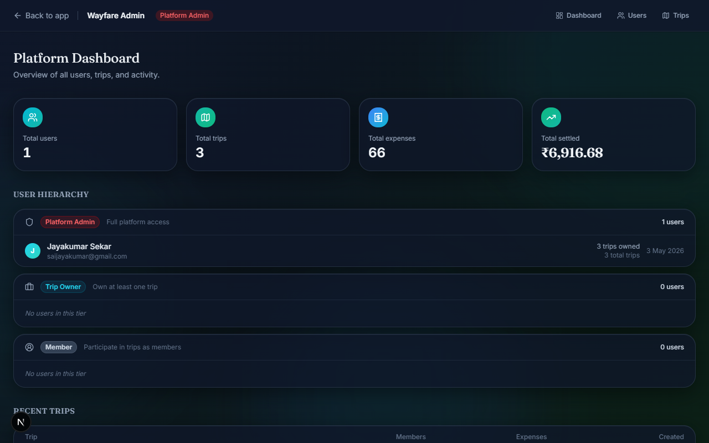
The platform admin dashboard — user overview, trip stats, and expense totals.
Accessing the admin dashboard
Navigate to /admin. If your email matches the PLATFORM_ADMIN_EMAIL
environment variable (set by the deployment administrator), you see the dashboard.
Otherwise, you are redirected to your trips page.
⚠️
Admin access is email-based. Multiple admins can be configured by
adding comma-separated email addresses to the PLATFORM_ADMIN_EMAIL
environment variable on Vercel.
What the dashboard shows
👥
Users
Total registered users, list of all accounts with email, name, and sign-up date.
✈️
Trips
Total trips created across the platform, list with name, creator, member count,
and expense count.
🧾
Expenses
Platform-wide expense count and total spend across all trips and all users.
📊
Activity
Recent platform activity — new users, new trips, recent expenses — for a
quick health check.
ℹ️
The admin dashboard is read-only — it shows data but does not allow editing or
deleting any user's trips or expenses. Administrative changes must be made
directly in the Supabase dashboard or via the database.